Pre-Lab
Modeling
Introduction
SRV02+BB01 Transfer Function
| > | tf_srv02_bb01 := P(s) = P[bb](s)*P[s](s): tf_srv02_bb01; |
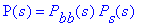
BB01 Transfer Function
| > | tf_bb01_gen := P[bb](s) = X(s) / Theta[l](s): tf_bb01_gen; |
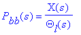
SRV02 Transfer Function
| > | tf_srv02_gen := P[s](s) = Theta[l](s) / V[m](s): tf_srv02_gen; |
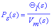
| > |
SRV02 Position Model
Transfer function that represents the position of the SRV02 load gear relative to the input voltage.
Process transfer function
| > | tf_plant_pos := P[s](s) = K/(tau*s+1)/s: tf_plant_pos; |
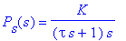
With output and input variables
| > | tf_pos_vm := Theta[l](s) = rhs(tf_plant_pos) * V[m](s): tf_pos_vm; |
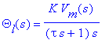
Model parameters for SRV02-ET in high-gear configuration with no load
| > | MDL_PRM_SRV02 := { K = 1.7588, tau = 0.0285 }; |
| > |
BB01 Model
Ball-and-beam model describes the position of the ball with respect to the angle of the beam relative to the horizontal.
Ball Position Relative to Beam Angle
EOM of the form
| > | EOM_X_ALPHA_GEN := diff(x(t),t$2) = f(alpha(t)): EOM_X_ALPHA_GEN; |
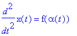
Newton's First Law of Motion
| > | F_SUM := m[b]*diff(x(t),t$2) = Sum(F): F_SUM; |
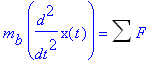
Forces acting on ball alongside the beam
| > | FX := m[b]*diff(x(t),t$2) = F[x,t] - F[x,r]: FX; |
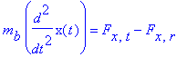
Translational gravitational force
| > | FX_T := F[x,t] = m[b]*g*sin(alpha(t)): FX_T; |
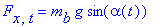
Rotational force from ball momentum
| > | FX_R_GEN := F[x,r] = tau[b] / r[b]: FX_R_GEN; |
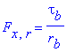
Torque acting on ball
| > | TAU_B := tau[b] = J[b]*diff(gamma[b](t),t$2): TAU_B; |
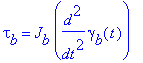
Relationship between rotation of ball and linear displacement
| > | GAMMA_TO_X := x(t) = gamma[b](t)*r[b]: GAMMA_TO_X; |
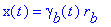
Re-arrange
| > | X_TO_GAMMA := gamma[b](t) = solve(GAMMA_TO_X,gamma[b](t)): X_TO_GAMMA; |
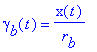
Put ball torque relative to linear position
| > | TAU_B_X := subs(X_TO_GAMMA,TAU_B): TAU_B_X; |
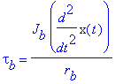
Rotational force
| > | FX_R := subs(TAU_B_X,FX_R_GEN): FX_R; |
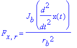
Insert translational and rotational forces
| > | FX_EXP := subs(FX_T,FX_R,FX): FX_EXP; |
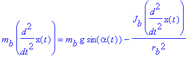
EOM of x relative to
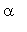
.
| > | EOM_X_ALPHA := diff(x(t),t$2) = solve(FX_EXP,diff(x(t),t$2)): EOM_X_ALPHA; |
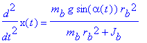
| > |
Ball Position Relative to SRV02 Angle
The EOM describing the position of the ball with respect to the rotary servo angle.
Beam trig
| > | TRIG_BEAM := sin(alpha(t)) = h / L[beam]: TRIG_BEAM; |
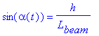
Servo trig
| > | TRIG_SRV02 := sin(theta[l](t)) = h / r[arm]: TRIG_SRV02; |
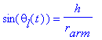
Height of beam
| > | H_SRV02 := h = solve(TRIG_SRV02,h): H_SRV02; |
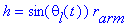
Relationship between beam angle and servo angle
| > | THETA_TO_ALPHA := subs(H_SRV02,TRIG_BEAM): THETA_TO_ALPHA; |
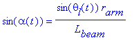
Nonlinear EOM of x relative to SRV02 load angle
 .
.
| > | EOM_X_THETA_NONLIN := subs(THETA_TO_ALPHA,EOM_X_ALPHA): EOM_X_THETA_NONLIN; |
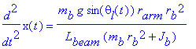
Assume small angles and therefore
| > | SINE_LIN := sin(theta[l](t)) = theta[l](t): SINE_LIN; |
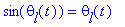
Linear EOM of x relative to SRV02 load angle
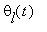
.
| > | EOM_X_THETA_LIN := subs(SINE_LIN,EOM_X_THETA_NONLIN): EOM_X_THETA_LIN; |
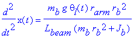
Model gain
| > | K_BB := K[bb] = coeff(rhs(EOM_X_THETA_LIN),theta[l](t),1): K_BB; |
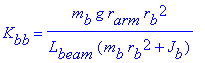
Simplified EOM
| > | EOM_X_THETA := lhs(EOM_X_THETA_LIN) = K[bb]*theta[l](t): EOM_X_THETA; |
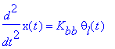
Ball and beam system parameters
| > | MDL_PRM_BB01 := {L[beam]=16.75*0.0254, r[arm] = 0.0254, g = 9.81, r[b]=0.5*0.0254, m[b] = 0.064 }; |
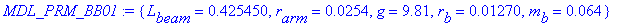
Moment of inertia of solid sphere.
| > | J_SPHERE := J = 2/5*m*r^2: J_SPHERE; |
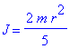
Moment of inertia of BB01 ball.
| > | JB := J[b] = 2/5*m[b]*r[b]^2: JB; |
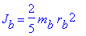
Value of ball inertia
| > | JB_VAL := evalf[3](subs(MDL_PRM_BB01,JB)): lhs(JB_VAL) = rhs(JB_VAL)*Unit(kg*m^2); |
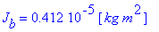
Add inertia to bb01 model parameters
| > | MDL_PRM_BB01 := MDL_PRM_BB01 union {JB_VAL}: MDL_PRM_BB01; |
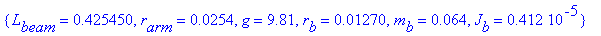
Evaluate gain
| > | K_BB_VAL := subs(MDL_PRM_BB01,K_BB): lhs(K_BB_VAL) = evalf[3](rhs(K_BB_VAL))*Unit(m/s^2/rad); |
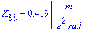
Add to ball and beam model parameters
| > | MDL_PRM_BB01 := MDL_PRM_BB01 union {K_BB_VAL}: MDL_PRM_BB01; |
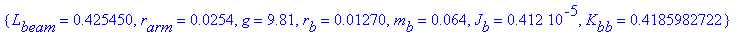
| > |
BB01 Transfer Function
Obtain transfer function representing ball displacement relative to SRV02 motor input voltage.
Initial conditions
| > | IC := { x(0) = 0, D(x)(0) = 0 }: |
Laplace of BB01
| > | TF_X_THETA_RAW := laplace(EOM_X_THETA,t,s): TF_X_THETA_RAW; |
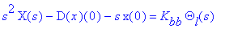
Transfer function of BB01
| > | TF_X_THETA := X(s) = solve( subs(IC,TF_X_THETA_RAW), X(s) ): TF_X_THETA; |
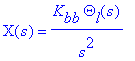
BB01 Process
| > | TF_P_BB := P[bb](s) = rhs(TF_X_THETA)/Theta[l](s): TF_P_BB; |
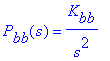
Transfer function between SRV02 voltage and ball position
| > | TF_X_VM := subs(tf_pos_vm,TF_X_THETA): TF_X_VM; |
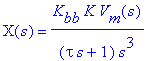
BB01 Plant transfer function
| > | TF_PLANT_BB01 := P(s) = rhs(TF_X_VM) / V[m](s): TF_PLANT_BB01; |
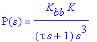
| > |
BB01 Control
Second-Order System
Consider a unity feedback system.
utput of a unity feedback system with compensator
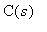
and a process model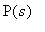
.
| > | y_uf := Y(s) = C(s) * P(s) * ( R(s) - Y(s) ): y_uf; |
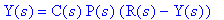
Closed-loop unity feedback transfer function
| > | tf_uf := Y(s) = solve(y_uf,Y(s)): tf_uf; |
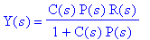
Standard second-order system
| > | tf_o2 := Y(s)/R(s) = omega[n]^2 / (s^2 + 2*zeta*omega[n]*s + omega[n]^2): tf_o2; |
![Y(s)/R(s) = omega[n]^2/(s^2+2*zeta*omega[n]*s+omega[n]^2)](images/srv02_exp04_bb0147.gif)
| > |
Time-Domain Specifications
Steady-state error, peak time, and maximum overshoot specifications of SRV02 closed-loop position step response.
| > | CNTRL_SPECS_SRV02 := {e[ss]=0, t[p]=0.15, PO = 5.0 }; |
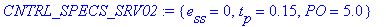
SRV02 steady-state error
| > | SPEC_SRV02_ESS := e[ss] = subs(CNTRL_SPECS_SRV02, e[ss]): SPEC_SRV02_ESS; |

Peak time spec
| > | SPEC_SRV02_TP := t[p] = subs(CNTRL_SPECS_SRV02, t[p]): lhs(SPEC_SRV02_TP) = rhs(SPEC_SRV02_TP)*Unit(s); |
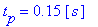
SRV02 overshoot
| > | SPEC_SRV02_PO := PO = subs(CNTRL_SPECS_SRV02, PO): lhs(SPEC_SRV02_PO) = rhs(SPEC_SRV02_PO)*Unit("%"); |
Steady-state error, peak time, and maximum overshoot specifications of BB01 closed-loop position step response.
| > | CNTRL_SPECS_BB01 := {e[ss]=5e-3, t[s]=3.5, c[ts] = 0.04, PO = 10.0 }; |
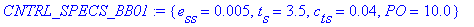
Ball and beam steady-state error
| > | SPEC_BB01_ESS := e[ss] = (subs(CNTRL_SPECS_BB01, e[ss])): abs(lhs(SPEC_BB01_ESS)) <= rhs(SPEC_BB01_ESS)*Unit(m); |
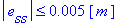
Ball and Beam settling time
| > | SPEC_BB01_TS := t[s] = subs(CNTRL_SPECS_BB01, t[s]): lhs(SPEC_BB01_TS) = rhs(SPEC_BB01_TS)*Unit(s); |
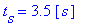
Ball and beam settling percentage
| > | SPEC_BB01_CTS := c[ts] = subs(CNTRL_SPECS_BB01, c[ts]): SPEC_BB01_CTS; |
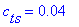
Ball and beam percentage overshoot
| > | SPEC_BB01_PO := PO = subs(CNTRL_SPECS_BB01, PO): lhs(SPEC_BB01_PO) = rhs(SPEC_BB01_PO)*Unit("%"); |
| > |
Settling Time and and Overshoot
Discusses the peak time and overshoot of a second-order step response.
Description
Given the step reference .
| > | R_STEP := R(s) = R[0]/s: R_STEP; |
Measuring settling time, where is the time where the output is , e.g. 4%, of the steady-state.
| > | MEAS_TS := t[s] = t[1] - t[0]: MEAS_TS; |
Measuring percentage overshoot
| > | MEAS_PO := PO = 100*(y[max] - R[0]) / R[0]: MEAS_PO; |
Deriving Settling Time Equation
Upper-bound equation of envelope of a damped sinusoid
| > | EQN_TS_UB := y[ub] = 1 + exp(-zeta*omega[n]*t[s])/sqrt(1-zeta^2): EQN_TS_UB; |
Settling time percentage
| > | C_TS := c[ts] = y[ub] - 1: C_TS; |
Upper bound in terms of settling time percentage
| > | Y_UB := y[ub] = solve(C_TS,y[ub]): Y_UB; |
Exponential term in settling time equation
| > | TS_EXP := exp(-zeta*omega[n]*t[s]); |
Place formula in terms of settling time percentage and solve for exponent.
| > | EQN_TS:= TS_EXP = solve( subs(Y_UB,EQN_TS_UB), TS_EXP ): EQN_TS; |
Take log
| > | EQN_TS_LN := evalc( log( lhs(EQN_TS) ) ) = log( rhs(EQN_TS) ): EQN_TS_LN; |
Solve for settling time
| > | TS:= t[s] = solve( EQN_TS_LN, t[s]): TS; |
Minimum natural frequency required to meet peak time and overshoot specification.
| > | WN_TS := omega[n] = solve(TS,omega[n]): WN_TS; |
| > |
Percentage Overshoot and Peak Time Equations for SRV02
Second-order system peak time equation
| > | TP := t[p] = Pi / (omega[n]*sqrt(1-zeta^2)): TP; |
Maximum percentage overshoot equation
| > | OS := PO = 100*exp(-Pi*zeta/sqrt(1-zeta^2)): OS; |
Find minimum damping ratio required to meet overshoot specification.
| > | ZETA := zeta = solve(OS,zeta): ZETA; |
Minimum natural frequency required to meet peak time and overshoot specification.
| > | WN := omega[n] = solve(TP,omega[n]): WN; |
| > |
Steady-state Error
See whether controlling the position with a PV feedback will give zero steady-state error.
Measuring steady-state error
| > | MEAS_ESS := e[ss] = r[ss](t) - y[ss](t): MEAS_ESS; |
Error in unity feedback
| > | err := E(s) = R(s) - Y(s): err; |
Find error
| > | tf_err := simplify(subs(tf_uf,err)): tf_err; |
and the assuming the compensator is a proportional gain of 1
| > | C_UNITY := C(s) = 1: C_UNITY; |
Steady-state error of BB01 ball position
| > | tf_err_Pbb_step := subs(R_STEP,P(s)=P[bb](s),TF_P_BB,C_UNITY,tf_err): tf_err_Pbb_step; |
When simplified, is expressed
| > | simplify( tf_err_Pbb_step ); |
Cannot find steady-state error using FVT, therefore find eom of error
| > | eom_err_bb_step := e(t) = invlaplace( rhs(tf_err_Pbb_step), s, t): eom_err_bb_step; |
There is no constant steady-state error with unity feedback.
SRV02 PV Position Control Design
Design PV control gains according to peak time and overshoot specifications.
Closed-loop Equation
The PV control in the time-domain has the form
| > | ctrl_pv_time := V[m](t) = k[p] * ( theta[d](t) - theta[l](t) ) - k[v] * diff( theta[l](t), t ): ctrl_pv_time; |
Transfer function of PV control
| > | ctrl_pv_tf := V[m](s) = k[p] * ( Theta[d](s) - Theta[l](s) ) - k[v] * s * Theta[l](s): ctrl_pv_tf; |
Closed-loop SRV02 PV position control transfer function.
| > | tf_cls_pos := Theta[l](s) / Theta[d](s) = collect( solve( subs(ctrl_pv_tf,tf_pos_vm), Theta[l](s) ) / Theta[d](s), s): tf_cls_pos; |
| > |
Finding Gains to Satisfy Specifications
Standard characteristic equation is
| > | char_eqn_std := denom( rhs( tf_o2 ) ): char_eqn_std; |
Denominator of SRV02 closed-loop system is
| > | tf_cls_denom := denom( rhs( tf_cls_pos) ): tf_cls_denom; |
Re-arranged to fit characteristic equation format
| > | char_eqn_srv02 := collect( tf_cls_denom / coeff(tf_cls_denom,s,2), s ): char_eqn_srv02; |
Setup equations to calculate the proportional and derivative gains needed for ( , ) specifications.
| > | KP_eqn := coeff(char_eqn_srv02,s,0) = coeff(char_eqn_std,s,0): KP_eqn; |
| > | KV_eqn := coeff(char_eqn_srv02,s,1) = coeff(char_eqn_std,s,1): KV_eqn; |
Proportional gain needed
| > | KP := k[p] = solve(KP_eqn,k[p]): KP; |
Derivative gain needed
| > | KV := k[v] = solve(KV_eqn,k[v]): KV; |
Evaluate damping ratio required to meet specs.
| > | ZETA_VAL := evalf[3]( subs(CNTRL_SPECS_SRV02,ZETA) ): ZETA_VAL; |
Evaluate natural frequency needed to meet specs.
| > | WN_VAL := evalf[3]( subs(CNTRL_SPECS_SRV02, ZETA_VAL, WN) ): lhs(WN_VAL) = rhs(WN_VAL)*Unit(rad/s); |
Steady-state model parameter
| > | MDL_K := K = subs(MDL_PRM_SRV02,K): lhs(MDL_K) = evalf[3]( rhs(MDL_K) )*Unit(rad/s/V); |
Time constant model parameter
| > | MDL_TAU := tau = subs(MDL_PRM_SRV02,tau): lhs(MDL_TAU) = evalf[3]( rhs(MDL_TAU) )*Unit(s); |
Proportional controls gain needed to meet the time-domain specifications given the model parameters above.
| > | KP_VAL := evalf[3]( subs(MDL_PRM_SRV02,WN_VAL,KP) ): lhs(KP_VAL) = rhs(KP_VAL)*Unit(V/rad); |
Derivative controls gain needed to meet the time-domain specifications given the model parameters above.
| > | KV_VAL := evalf[3]( subs(MDL_PRM_SRV02,WN_VAL,ZETA_VAL,KV) ): lhs(KV_VAL) = rhs(KV_VAL)*Unit(V*s/rad); |
SRV02+BB01 Stability Analysis
Before designing the cacade control, some analysis is performed on the entire system.
Root-Locus of Open-Loop System
Based on settling time and percentage overshoot equations, find the natural frequency and damping ratio needed and draw those on the S-Plane.
Position of SRV02 is controlled and it assumed that there are no dynamics between the votlage and load shaft. Thus
| > | theta_d_l_time := theta[l](t) = theta[d](t): theta_d_l_time; |
In Laplace
| > | theta_d_l_s := laplace((theta_d_l_time),t,s): theta_d_l_s; |
Consider the BB01 compensator, i.e. outer-loop control.
| > | tf_bb01_ctrl_C := Theta[d](s) = C[bb](s) * ( X[d](s) - X(s) ): tf_bb01_ctrl_C; |
Proportional compensator
| > | tf_C_p := C[bb](s) = K[c]: tf_C_p; |
BB01 controller with unity compensator
| > | tf_bb01_ctrl_p := subs(tf_C_p, tf_bb01_ctrl_C): tf_bb01_ctrl_p; |
Closed-loop system of BB01 with proportional compensator
| > | tf_bb01_cls_p := X(s)/X[d](s) = solve( subs(theta_d_l_s, tf_bb01_ctrl_p, TF_X_THETA), X(s) )/X[d](s): tf_bb01_cls_p; |
Poles of CLS
| > | tf_bb01_cls_p_poles := {K[bb]*K[c]*j,-K[bb]*K[c]*j}: tf_bb01_cls_p_poles; |
As the poles of system move further along the imaginary axis and the system becomes more oscillatory (generally more unstable).
| > |
Desired Location of Poles
Recall the prototype second order system
| > | tf_o2; |
Example: desired natural frequency
| > | EX_WN := omega[n] = 1.5: lhs(EX_WN) = rhs(EX_WN)*Unit(rad/s); |
Example: desired damping ratio
| > | EX_ZETA := zeta = 0.6: EX_ZETA; |
Location of poles along the real axis
| > | pole_loc_sigma := sigma = zeta*omega[n]: pole_loc_sigma; |
Location of poles along the imaginary axis is the damped frequency
| > | pole_loc_wd := omega[d] = omega[n]*sqrt(1-zeta^2): pole_loc_wd; |
Angle of poles from imaginary axis from damping ratio
| > | pole_loc_angle := theta = arcsin(zeta): pole_loc_angle; |
Evaluate damping ratio required to meet specs.
| > | ZETA_VAL_BB01 := evalf[3]( subs(CNTRL_SPECS_BB01,ZETA) ): ZETA_VAL_BB01; |
Evaluate natural frequency needed to meet specs.
| > | WN_VAL_BB01 := evalf[3]( subs(CNTRL_SPECS_BB01, ZETA_VAL_BB01, WN_TS) ): lhs(WN_VAL_BB01) = rhs(WN_VAL_BB01)*Unit(rad/s); |
| > |
BB01 Root Locus Design
Closed-loop Equation
Consider a compensator with a proportional gain and a zero, i.e. ideal PD control.
| > | tf_C_pd := C[bb](s) = K[c] * (s+z): tf_C_pd; |
Loop transfer function of BB01
| > | tf_L := L[bb](s) = C[bb](s)*P[bb](s): tf_L; |
Ideal PD controller
| > | tf_bb01_ctrl_pd := subs(tf_C_pd, tf_bb01_ctrl_C): tf_bb01_ctrl_pd; |
Ideal PD closed-loop BB01 position control transfer function.
| > | tf_bb01_cls_pd := X(s)/ X[d](s) = collect( solve( subs(theta_d_l_s,tf_bb01_ctrl_pd,TF_X_THETA), X(s) ), s )/X[d](s): tf_bb01_cls_pd; |
Ideal PV controller
| > | tf_bb01_ctrl_pv := Theta[d](s) = K[c]*( z*(X[d](s)-X(s)) - s*X(s) ): tf_bb01_ctrl_pv; |
Ideal PV closed-loop BB01 position control transfer function.
| > | tf_bb01_cls_pv := X(s)/ X[d](s) = collect( solve( subs(theta_d_l_s,tf_bb01_ctrl_pv,TF_X_THETA), X(s) ), s )/X[d](s): tf_bb01_cls_pv; |
| > |
Steady-State Error using Compensator
Steady-state error of BB01 ball position using Lead compensator
| > | tf_err_bb01_step_pd := subs(R_STEP,P(s)=P[bb](s),C(s)=C[bb](s),TF_P_BB,tf_C_pd,tf_err): tf_err_bb01_step_pd; |
Simplify
| > | simplify(tf_err_bb01_step_pd); |
Final-value theorem
| > | E_SS := e[ss] = Limit(s*E(s),s=0): E_SS; |
Sub in FVT
| > | simplify(subs(tf_err_bb01_step_pd,E_SS)); |
Resulting position error - system is Type 1.
| > | E_SS_STEP_VAL := e[ss] = limit(s*rhs(tf_err_bb01_step_pd),s=0): E_SS_STEP_VAL; |
However, there is a steady-state error found in the actual system and when simulating the device with its nonlinear model. The controller will have to be tuned in order to confirm to the necessary steady-state error.
Finding Zero Location and Gain to Satisfy Specifications
Recall the prototype second-order system
| > | tf_o2; |
![Y(s)/R(s) = omega[n]^2/(s^2+2*zeta*omega[n]*s+omega[n]^2)](images/srv02_exp04_bb01125.gif)
Characteristic equation
| > | char_eqn_bb := denom(rhs(tf_bb01_cls_pv)): char_eqn_bb; |
Desired gain equation
| > | eqn_des_Kc := coeff(char_eqn_bb,s,1) = coeff(char_eqn_std,s,1): eqn_des_Kc; |
Desired zero location
| > | eqn_des_zero := coeff(char_eqn_bb,s,0) = coeff(char_eqn_std,s,0): eqn_des_zero; |
Desired gain
| > | des_Kc := K[c] = solve( eqn_des_Kc, K[c] ): des_Kc; |
Desired zero location
| > | des_z := z = solve( eqn_des_zero, z): des_z; |
Computed compensator gain
| > | des_Kc_val := evalf[3]( subs(MDL_PRM_BB01, ZETA_VAL_BB01, WN_VAL_BB01, des_Kc) ): lhs(des_Kc_val) = rhs(des_Kc_val)*Unit(rad/m); |
Evaluated zero location
| > | des_z_val := evalf[3]( subs(ZETA_VAL_BB01, WN_VAL_BB01, K_BB_VAL, des_Kc_val, des_z) ): lhs(des_z_val) = rhs(des_z_val)*Unit(rad/s); |
| > |
BB01 Lead Compensator Design
Closed-loop Equation
First-order high-pass filter
| > | tf_hpf := H(s) = omega[f]*s / (s + omega[f]): tf_hpf; |
Transfer function of PV control with low-pass filter.
| > | tf_bb01_ctrl_pd_bsp := Theta[d](s) = K[c] * ( z*( X[d](s) - X(s) ) + omega[f]*s/(s+omega[f]) * ( b[sp]*X[d](s) - X(s) ) ): tf_bb01_ctrl_pd_bsp; |
Closed-loop BB01 position control transfer function.
| > | tf_bb01_cls_pd_bsp := X(s)/ X[d](s) = collect( solve( subs(theta_d_l_s,tf_bb01_ctrl_pd_bsp,TF_X_THETA), X(s) ), s ) / X[d](s): tf_bb01_cls_pd_bsp; |
When no set-point weight
| > | subs(b[sp]=0,tf_bb01_cls_pd_bsp); |
BB01 compensator
| > | tf_bb01_C_gen := C[bb](s) = Theta[d](s) / (X[d](s)-X(s)): tf_bb01_C_gen; |
Setting , the compensator is
| > | tf_bb01_C_pd_bsp := C[bb](s) = collect( simplify( rhs( subs(b[sp]=1,tf_bb01_ctrl_pd_bsp) / ( X[d](s)-X(s) ) ) ), s): tf_bb01_C_pd_bsp; |
Zero equation
| > | eqn_C_num := numer( rhs( tf_bb01_C_pd_bsp ) ) = 0: eqn_C_num; |
Location of zero
| > | loc_C_zero := z[c] = solve(eqn_C_num,s): loc_C_zero; |
Pole equation
| > | eqn_C_den := denom( rhs( tf_bb01_C_pd_bsp ) ) = 0: eqn_C_den; |
Location of pole
| > | loc_C_pole := p[c] = solve( eqn_C_den, s): loc_C_pole; |
Find Gain, Zero, and Filter Cutoff to Satisfy Specifications
Standard third-order characteristic equation
| > | eqn_char_std_o3_factored := ( s^2 + 2 * zeta * omega[n] * s + omega[n]^2 ) * ( 1 + T[p]*s ): eqn_char_std_o3_factored; |
This expands to
| > | eqn_char_std_o3 := collect( expand( eqn_char_std_o3_factored ) / coeff( eqn_char_std_o3_factored, s, 3), s): eqn_char_std_o3; |
Characteristic equation
| > | eqn_char_bb_o3 := collect( denom( rhs( tf_bb01_cls_pd_bsp ) ) , s ): eqn_char_bb_o3; |
Required filter cutoff frequency
| > | eqn_f_wf := coeff(eqn_char_bb_o3,s,2) = coeff(eqn_char_std_o3,s,2): eqn_f_wf; |
Required pole
| > | des_f_Tp := T[p] = solve(eqn_f_wf,T[p]): des_f_Tp; |
Equation for compensator gain
| > | eqn_f_Kc := coeff(eqn_char_bb_o3,s,0) = coeff(eqn_char_std_o3,s,0): eqn_f_Kc; |
Equation for zero location
| > | eqn_f_z := coeff(eqn_char_bb_o3,s,1) = coeff(eqn_char_std_o3,s,1): eqn_f_z; |
Needed gain
| > | des_f_Kc := K[c] = solve(eqn_f_Kc,K[c]): des_f_Kc; |
Subsitute gain equation into zero equation and then solve for .
| > | des_f_z := z = solve(subs(des_f_Kc, eqn_f_z),z): des_f_z; |
Manually choose filter cutoff frequency
| > | WF_VAL_BB01 := omega[f] = 2*Pi*1.0: lhs(WF_VAL_BB01) = evalf[3](rhs(WF_VAL_BB01))*Unit(rad/s); |
Pole time constant
| > | des_f_Tp_val := subs(WN_VAL_BB01,ZETA_VAL_BB01,WF_VAL_BB01,des_f_Tp): lhs(des_f_Tp_val) = evalf[3](rhs(des_f_Tp_val))*Unit(s); |
Evaluate zero location
| > | des_f_z_val := evalf[3]( subs( WN_VAL_BB01, ZETA_VAL_BB01, K_BB_VAL, des_f_Tp_val, WF_VAL_BB01, des_f_z) ): lhs(des_f_z_val) = rhs(des_f_z_val)*Unit(rad/s); |
Computed compensator gain
| > | des_f_Kc_val := evalf[3]( subs(MDL_PRM_BB01, WN_VAL_BB01, des_f_Tp_val, WF_VAL_BB01, des_f_z_val, des_f_Kc) ): lhs(des_f_Kc_val) = rhs(des_f_Kc_val)*Unit(rad/m); |
| > |